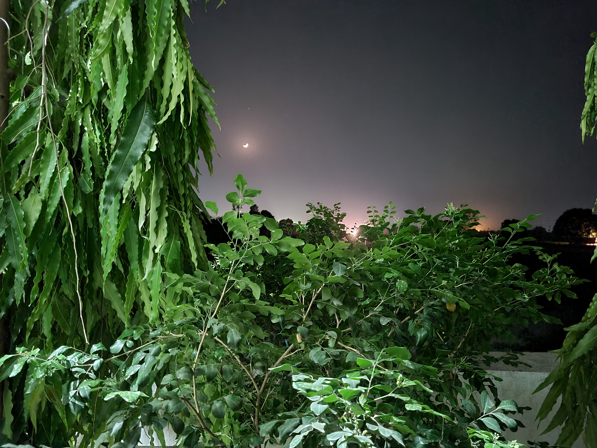

This picture I clicked in Delhi,from the point where India Gate is connecting with the other routes of city.

This Beautiful picture is from Bihar,it basically is a garden containing such beauty which can't be described in words

A morning that was good in actual.When I clicked this picture,I felt that how by changing the city only your morning can also be changed.

This picture is clicked during my Mussorrie trip,which was basically a One-day trip.Being a tea lover it's quite difficult for me to be there and not drinking tea.I almost Had tea on every spot we took a break or we went to visit.It was one of happiest day.

This is my University,Amity University, Gwalior,by looking at the images you will get attracted to the campus,which undoubtedly holds pure beauty,but only the campus.Its a good place if you want to make a great career out of yourself.

Here's another picture of my University,describing the scorching sun,but we have a lot of trees to provide us shade from the evil sun,haha just kidding.If you are into sun bathing Amity is a nice palce to be at.

This picture is from my rooftop.Picture describing that how alone stars could be without Moon and Clouds.Yet it was a nice feeling to stare at stars and the trees abviously.

This is not Eiffel Tower if you wondering that when I left India.This is from Waste To Wonderland,Delhi.In this picture you can look at two beauties at once,The Tower and the Moon.Here I have some memories that can't be forgotten.